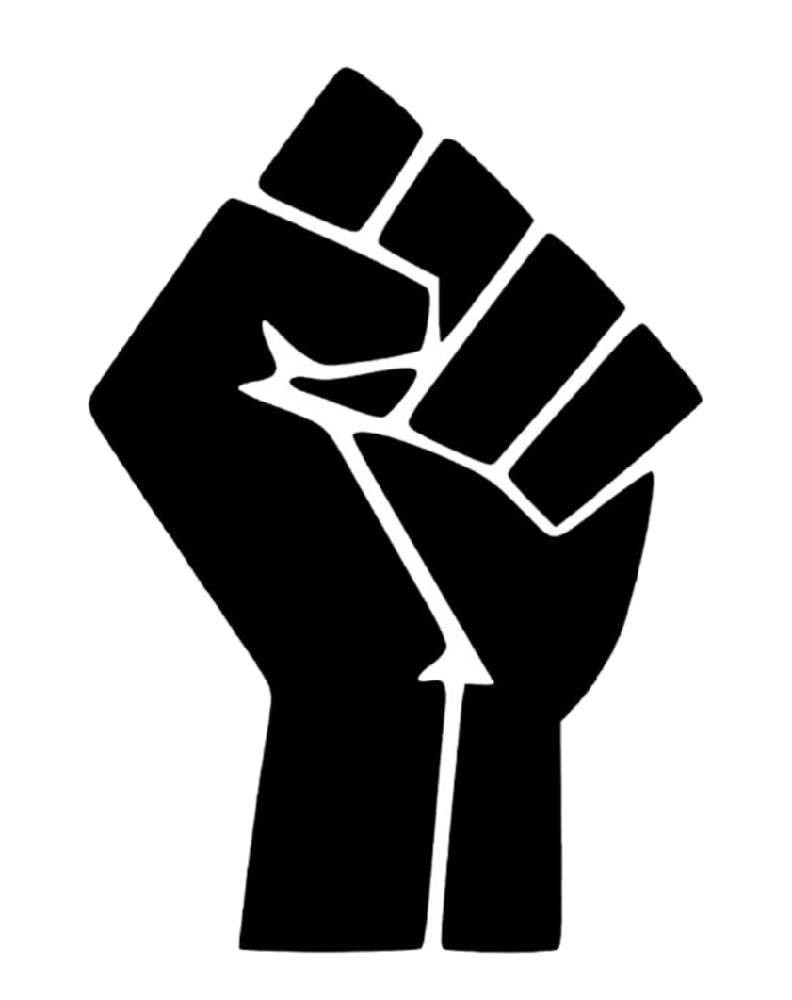
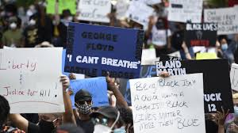

One of the most famous victims of police brutality, George Floyd was killed in 2020 after allegedly tried to use a counterfeit $20 bill. The fact that this was only an accusation is really saddening as he was killed just moments later. After the police went for him, Floyd was handcuffed on the ground while Officer Derek Chauvin knelt on his neck while Floyd pleaded the four police officers to let go of him as he could not breathe. Officer Chauvin refused to let go and kept on kneeling on his neck and applied more pressure. This continued even after Floyd was unresponsive and quiet. Two autopsy reports listed Floyd's death as homicide, proving that he was killed by Officer Chauvin.
It is seen in many reports and footages that Floyd was intentionally killed and was very unreasonable as he was not resisting. All 4 officers who took part in the crime were suspended and Chauvin was filed a second degree murder. Protests were initiated because of his death and the attention on police brutality on African American people is finally sparking. Click Floyd's picture to see the full report.
Here are social media links related to the Black Lives Matter Movement. Also above, is the link for the official BLM website.
image sources: https://interactive.aljazeera.com/aje/2020/know-their-names/index.html, https://www.mprnews.org/story/2020/05/29/protests-over-killing-of-george-floyd-spread-across-the-nation